Перед въездом в Каргил очень живописное слияние рек Shingo и Suru, потом жуткая пылища от утренних грузовиков (по утрам есть традиционный " час пик" из грузовиков), после которой мы единогласно решили поехать в долину реки Инд через перевал Hamboting La 4070 (4100м).
Закупка еды в Каргиле (здесь много магазинов с булками, соками и водами, бакалеей) и в путь на перевал. Подъем длиной около 35 км, наверху холодно и сильный ветер. Очень красивый и длинный крутой спуск в долину Инда с проверкой документов посередине.
Вот он, Инд, военные базы и укрепления, разворот назад - нужны пермиты. Заброска на машине назад на километр вверх в темноте, подсадка пассажира на крышу, водитель буддист.
На перевале ночью штормовая погода, спускаемся в сторону Каргил примерно на 350-400 метров (по высоте) до ручья, который видели днём во время подъема, там и заночевали.
Решаем завтра разделиться: Ваня с Пашей возвращаются налегке в Каргил за пропусками, а Саша и Сережа поднимают тем временем рюкзаки на перевал. Встречаемся наверху.
Ночевка на 3700 м. Вечером холодно.
Computer (Length/Duration/Average Speed): 70.7/6.15/12.7
GPS (Length/Vertical Up/Vertical Down): 86.1/3100/1925
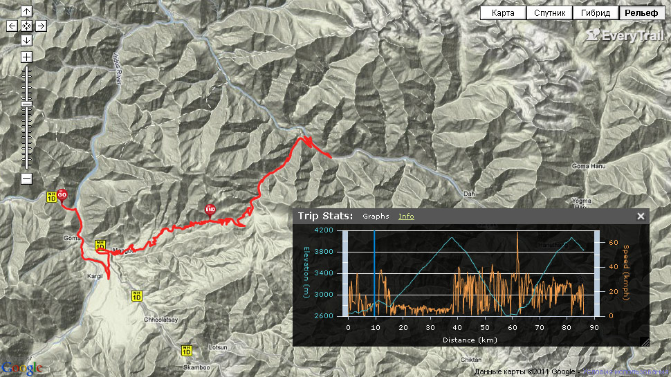
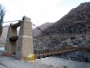 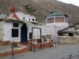 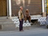 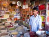 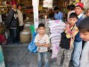 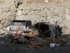 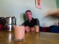 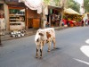 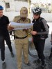 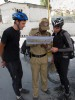 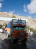 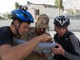 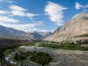 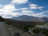 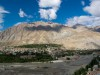 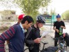 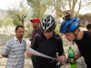 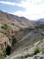 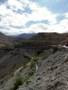 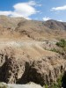 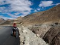  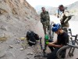 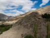 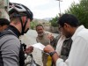
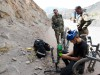 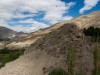 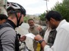  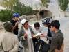 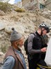 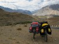 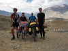 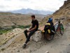 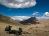 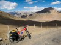 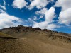 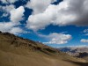 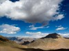 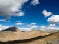 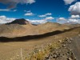 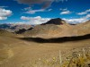 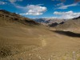 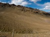 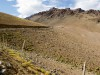 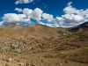 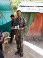 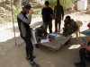 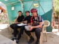 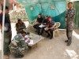 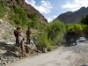 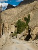 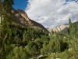 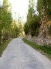
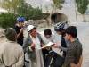 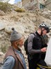 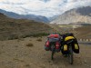 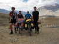 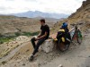 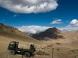 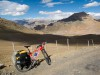 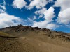 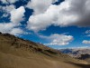 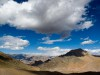 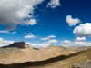 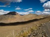 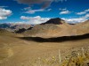 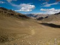 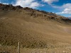 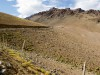 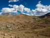 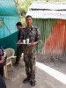 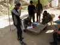 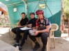 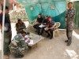 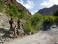 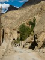 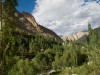 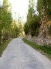